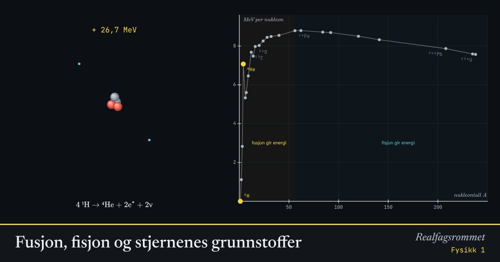

Fusjon, fisjon og stjernenes grunnstoffer
Kjerner med høy bindingsenergi per nukleon er mest stabile. Lette kjerner frigjør energi når de smelter sammen (fusjon), tunge når de spaltes (fisjon). Toppen ligger ved jern.
Start animasjonen
Formler
Om animasjonen
Kurven viser bindingsenergi per nukleon. Jo høyere punkt, jo hardere er nukleonene bundet, og jo mindre masse har kjernen per nukleon.
Når produktene ligger høyere på kurven enn utgangsstoffene, frigjøres energi. Massen blir litt mindre, og forskjellen blir energi etter .
Stjerner lager grunnstoffer ved fusjon: hydrogen blir helium, helium blir karbon og oksygen, og i tunge stjerner fortsetter det helt til jern.
Grunnstoffer tyngre enn jern krever energi for å lages. De dannes når store stjerner eksploderer som supernovaer og når nøytronstjerner kolliderer.
Prøv dette
- Hvorfor kan ikke en stjerne få energi ved å lage grunnstoffer tyngre enn jern?
- Regn ut massetapet i u for reaksjonen D + T når det frigjøres 17,6 MeV.
- Hvor mye mer energi frigjøres per reaksjon ved fisjon av uran enn ved D–T-fusjon? Og per kilogram brensel?
- Gullet i en ring ble laget i en eksplosjon i verdensrommet. Forklar.
Kompetansemål
- Fysikk 1: Fusjon, og hvordan grunnstoffer dannes i stjerner